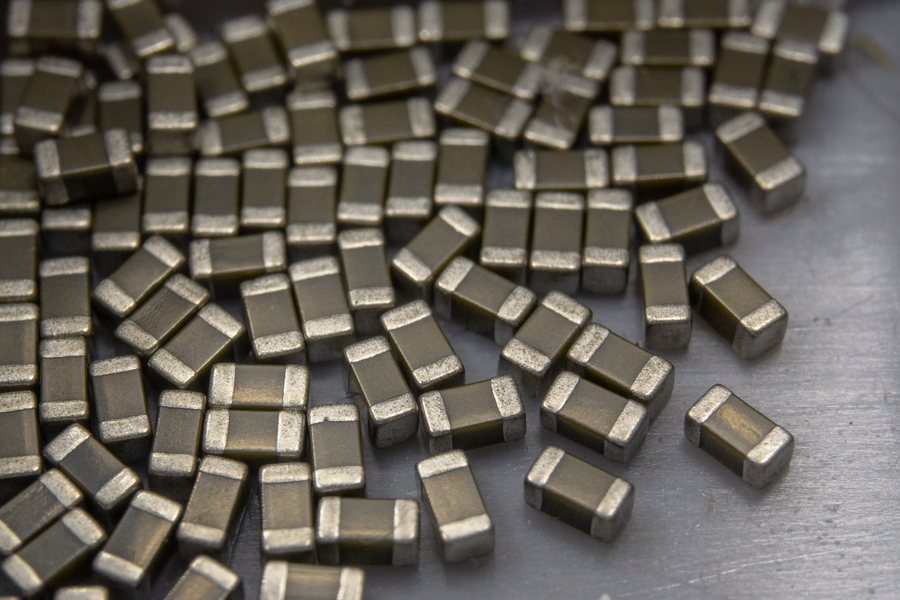
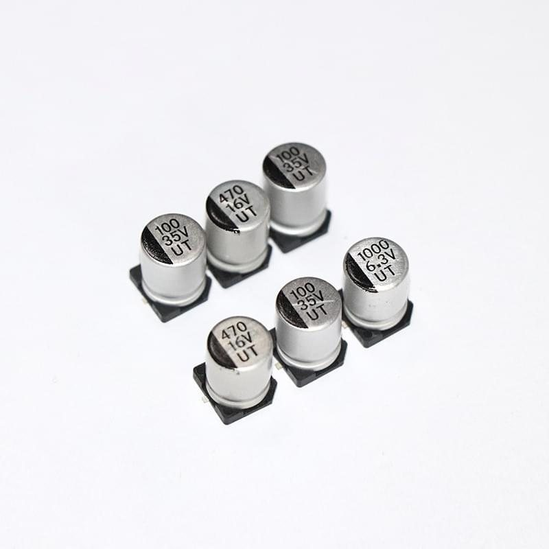

电容：容值只是开始
标称 10µF 的 0402 电容，在 3.3V 直流偏压下可能只剩 4µF——这就是为什么「图纸上一个 22µF 就够」的电源，实测纹波却超标。电容的真实容值取决于材质、封装、偏压、温度和频率。这一章把五个变量逐个讲清。


读完这一章，你应该能
- 根据容值与稳定性要求，从 C0G / X7R / X5R / Y5V 中选出正确材质
- 解释 22µF 与 0.1µF 并联为什么不能只留一个
- 说出 ESR、ESL 与自谐振频率的关系，判断一颗电容在目标频率上还有没有用
- 知道钽电容与聚合物电容的失效模式，以及为什么钽必须降额 50%
2.2.1四种材质：先看介质，再看容值
| 材质 | 容值范围 | 容差 | 温度特性 | 用途 |
|---|---|---|---|---|
| C0G / NP0 | 1pF–100nF | ±1–5% | 极稳（±30ppm/°C） | 晶振负载电容、滤波、定时、谐振 |
| X7R | 1nF–10µF | ±10–20% | −55~125°C，±15% | 通用去耦、旁路 |
| X5R | 100nF–100µF | ±20% | −55~85°C，±15% | 大容量去耦、DC-DC 输出 |
| Y5V | 10nF–10µF | −20~+80% | −30~85°C，极差 | 只适合对容值不敏感的场合，慎用 |
MINI 板第 1 页的 C12 / C13（18pF）挂在 24MHz 晶振两端，必须是 C0G：晶振的负载电容精度直接决定频偏，X7R 的 ±15% 会让频偏超出规格。
直流偏压降容：最容易踩的坑
高介电常数材质（X5R/X7R）在直流电场下极化被「钉住」，有效容值下降。经验数据（0402/0603 封装）：
- 10µF / 6.3V X5R，在 3.3V 偏压下常只剩 40–60%；
- 22µF / 6.3V 在 3.3V 下剩 50–70%；
- 10µF / 25V 在 3.3V 下几乎不掉（电压余量大）；
- 同容值下，封装越大、耐压越高，降容越小。
所以「用 6.3V 耐压的 10µF 做 3.3V 电源输出」是最常见的隐性失效：纹波算出来没问题，实测却超标一倍。
自谐振与阻抗计算器给容值、ESL、ESR，算 f0 与目标频率下的阻抗
容值 0.1 µF
ESL 0.6 nH
ESR 10 mΩ
考察频率 10 MHz
2.2.2钽电容与聚合物：极性、失效模式、降额
钽电容体积小、容值大、ESR 中等，但有两个硬约束：有极性，反接会烧；失效模式是短路（不是开路），严重时会起火。所以行业惯例是：耐压降额 50%、使用环境温度再降额，并且不能承受大的浪涌电流（上电瞬间要串限流或选带浪涌 rated 的型号）。
聚合物电容（Polymer）ESR 极低（几 mΩ）、失效模式是开路、允许更大纹波电流，逐渐取代钽。代价是价格高，且耐压上限较低（常见 25V 以内）。
三个电容事故
1. 钽反接：装配或维修时装反，通电后几分钟内冒烟短路。
2. 用 Y5V 做定时：温度一变容值差 80%，RC 延时完全不同。
3. 大容值 MLCC 贴得离芯片太远：走线电感把 ESL 优势全抵消，等于没放。
2.2.3板上五处电容，五种目的
| 位号 | 容值 / 材质 | 位置 | 目的与判据 |
|---|---|---|---|
| C12 / C13 | 18pF C0G | 24MHz 晶振两端 | 负载电容匹配：晶振规格 CL=18pF 时，两个 18pF 串联等效 9pF 加寄生电容，需按规格书核对 |
| C14 | 104（0.1µF）X7R | POR_B 复位脚 | 吸收复位线上的干扰、与 R33 形成小延时，防止毛刺误复位 |
| 电源输入 | 22µF + 0.1µF | DCDC 输入/输出 | 大容值稳低频、小容值吸高频尖峰（图 2-2） |
| C65 | 2µF | DDR VREF 分压点 | 把 1.5k/1.5k 分压点的噪声积分掉，保证参考稳定 |
| C66 | 104 | VREF 旁 | 高频旁路，与 C65 形成「大+小」组合 |
自测
3.3V 电源输出用 0402 10µF/6.3V X5R，实测纹波比计算值大一倍，为什么？
直流偏压让有效容值降到 4–6µF，同时 0402 的 ESR/ESL 偏大。换 0805/1206 的 22µF、或提高耐压到 10V/16V 能显著改善。
晶振负载电容能用 X7R 的 18pF 吗？
不建议。X7R 容差 ±15% 且随温度/偏压变化，会直接改变晶振负载电容，导致频偏超标甚至不起振。必须 C0G。
为什么钽电容要降额到 50% 耐压？
因为它的失效模式是短路且可能起火，而击穿风险随电压与温度快速上升。行业惯例按 50%（甚至 60%）降额，并限制浪涌电流。